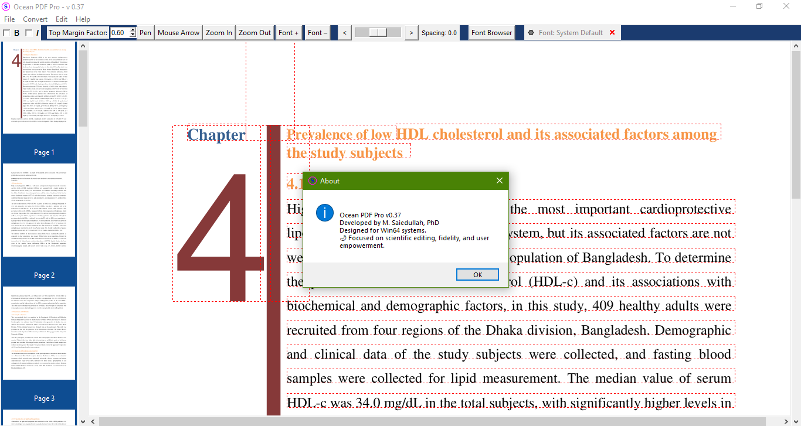

Full Functional Desktop Version

Building on the robust architecture of our web-based editor, the upcoming **Ocean PDF Desktop Pro** is designed for users requiring professional-grade document management without an internet connection. While our web version remains a lightweight, zero-retention tool, the Desktop edition will provide an enhanced environment for high-volume local processing.
Key Features Under Development:
- Native Performance: Faster rendering and export capabilities utilizing local hardware resources.
- Expanded Typography: Full access to your system's font library alongside our standard embedded fonts like Helvetica, Arial, and Times New Roman.
- Advanced Local Storage: Securely save and manage session history with full undo/redo persistence across multiple workdays.
- Offline Privacy: Operates entirely on your machine, ensuring your data never touches a server—consistent with our strict privacy philosophy.
- Batch Processing: Enhanced tools for merging, editing, and exporting multiple large-scale PDF files simultaneously.
Status Update: The desktop version is currently in active development. We are refining the offline integration layer and local font-embedding engines to ensure 100% document fidelity. Full functional desktop version will be available soon.